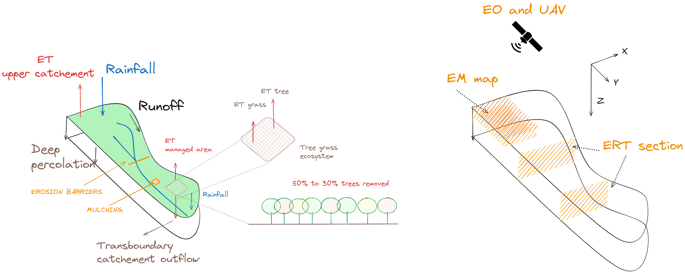
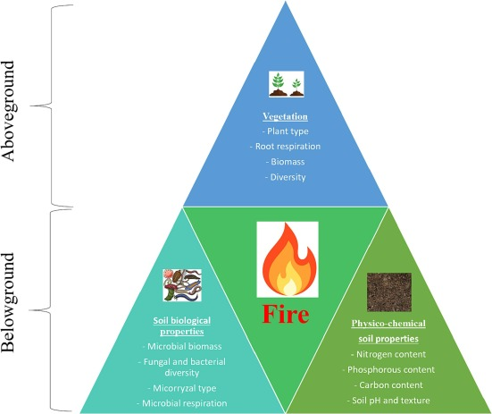

WP1
Long term multi-scale monitoring of key components of the ECZ
To date, experimental trials have relied on measurements with limited or no deep soil ancillary information. GRwater addresses this gap by implementing advanced soil imaging methods. WP1 focuses on developing a scientific foundation using time-lapse geophysical soil mapping to overcome the limitations of punctual sensors in capturing spatial variations in soil moisture.
A prospecting strategy has been designed for geophysical implementation to assess the intra- and inter-treatment spatial and seasonal variability (e.g., tree density, erosion barriers, mulching—see Table 1). Automated daily Time-Lapse Electrical Resistivity Tomography (TL-ERT) will be conducted. Due to the inability to automate Electromagnetic (EM) data collection, three to four field missions per year are scheduled during key phenological stages of vegetation, coinciding with UAV flights. Each fieldwork period, lasting 2 to 3 days, will collect all necessary EM data for three different treatments at Field Sites 1 and 2 (see Table 1). Multi-coil antennas, capable of mapping depths from 0.2 to 3 meters, will be employed.
Data processing will utilize open-source software with reproducible pipelines, involving two main steps:
- Inversion: Using open-source codes from Blanchy et al. (2020) and McLachlan et al. (2021) to spatially retrieve soil properties.
- Translation: Interpreting data in terms of soil moisture using petrophysical relationships such as Archie’s Law. Calibration of these relationships may require soil samples and laboratory analysis.

Expected Dataset
This work will produce a consistent and well-documented in situ dataset, including:
- ERT (up to 6m) and EM (up to 3m) subsurface data and models
- Below- and above-ground measurements of biodiversity indices
- UAV and Earth Observation (EO) data (at 30m resolution):
- Land Surface Temperature (LST) and Leaf Area Index (LAI) as inputs for WP2
- Functional vegetation biodiversity following Cavender-Bares et al. (2017)
Protocols for data acquisition and processing will be made available for this and future projects.

Deliverables
WP1 is aligned with Goal 1 and will produce the following deliverables:
- D1.1 [Field Trial Scale]: Report on introducing a geophysical workflow to explore soil moisture’s spatial variability for mulching and erosion barriers in post-fire soil management.
- D1.2 [Field Trial Scale]: Report on introducing a geophysical workflow to explore soil moisture’s spatial variability for 30% and 50% tree density.
- D1.3 [Field Trial Scale]: UAV flights with thermal and multispectral sensors at three different vegetation phenological stages per year.
- D1.4 [Field Trial Scale]: Ancillary post-fire below- and above-ground ecosystem biodiversity data (see Figure 7).
- D1.5 [Catchment Scale]: Harmonized collection of EO data (weekly).
Contents